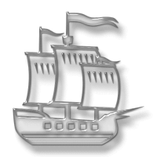

Kabinet 426, konzultacije: 08-12, uz prethodni dogovor emailom
Poslovanje u brodarstvu (PUB)
Ispit i ocjenjivanje
REDOVNI STUDENTI:
Kolokvij sredinom semestra, iz gradiva Literature 1., od početka do poglavlja "12. Tržišna evaluacija brodova u prekomorskoj trgovini". Također pokriva dokumente do ugovora "Repaircon" u Poslovnim dokumentima.
Završni ispit, iz gradiva Literature 1., od navedenog poglavlja do kraja. Također pokriva dokumente od ugovora "Repaircon" do kraja Poslovnih dokumenana. U Poslovnim dokumentima, od studenta se traži razumijevanje sadržaja/klauzula dokumenata. Ovo u biti znači tumačenje, ili prijevod s engleskog, teksta koji se dobije na ispitu.
IZVANREDNI STUDENTI:
Polaže ispite (kolokvij i završni ispit) tijekom nastave na isti način i u istim terminima skupa s redovnim studentima, kako je navedeno gore. Izvanredni student koji nije u mogućnosti doći na nastavu s redovnim studentima u terminima ispita tijekom nastave, polaže pismeni ispit izvan nastave iz cijelog gradiva u ispitnim terminima navedenim ovdje-»
Dodatna uputstva o polaganju ispita i ocjenjivanju, te popis svih ispitnih termina pogledaj ovdje-»
Sadržaj kolegija
Načela pomorske trgovine, organizacija pomorskog tržišta i karakteristike potražnje brodskog prijevoza
troškovi prijevoza i ekonomija razmjera
Segmentacija pomorskog tržišta, potražnja, ponuda brodova i kretanje vozarina
Regionalna struktura svjetske brodogradnje, proces izgradnje broda, troškovi brodogradnje i konkurentnost
Tržište novih brodova, tržište rabljenih brodova i reciklaža brodova

Utjecaj troškova i zarade brodara na kretanje pomorskog tržišta
Financiranje brodova i brodarskih kompanija
Korelacija predviđanja i istraživanja pomorskog tržišta
Tržišna evaluacija brodova u prekomorskoj trgovini i čimbenivi koji određuju vrstu naručenog broda
Prava i odgovornosti koja proizlaze iz određenih dokumenata u poslovanju interesnih strana, prvenstveno prijevoznika i naručitelja prijevoza


{kind=link}
{kind=link}
{kind=link}